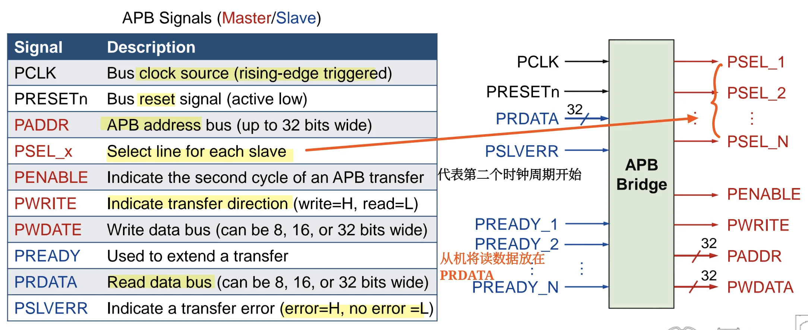
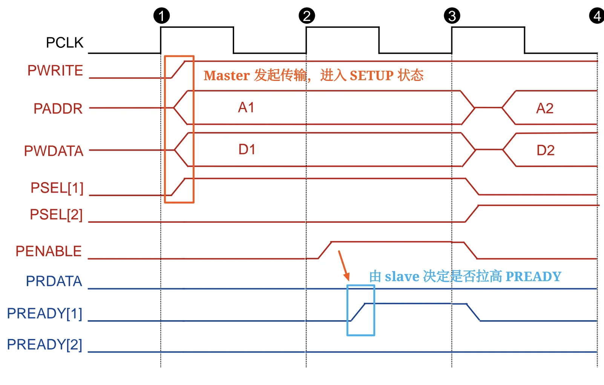
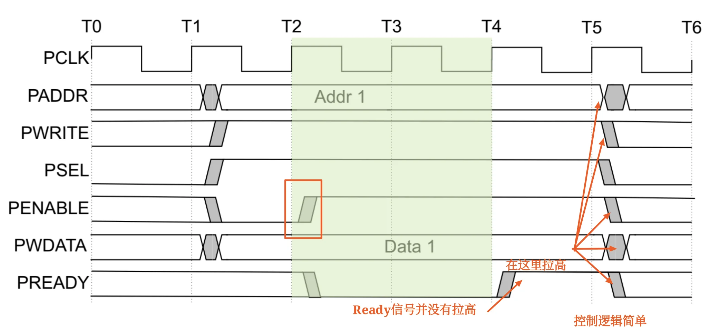
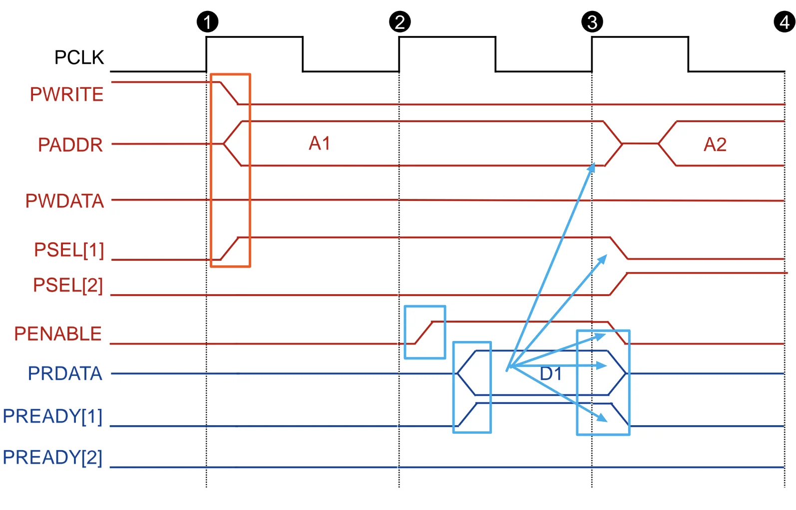
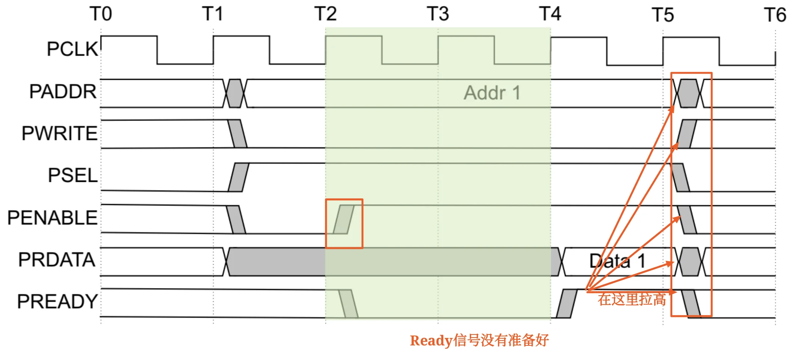

APB 总线零基础¶
0. 一句话建立直觉¶
APB 可以先理解成：SoC 里用来访问低速外设控制寄存器的简单同步总线。
它不追求高吞吐，而追求：
- 接口简单
- 低功耗
- 低成本
- 适合 UART、Timer、Keypad、PIO 等外设
学习 APB 时不要一上来背所有信号。先抓住一个核心节奏：
如果 slave 没准备好，就用 PREADY=0 把 ACCESS 阶段拉长，形成 wait states。
1. AMBA 中的 APB 放在哪里¶
AMBA 是 ARM 体系中广泛使用的片上总线/接口规范。AMBA2.0 包括：
| 总线 | 全称 | 定位 |
|---|---|---|
| APB | Advanced Peripheral Bus | 低功耗、简单接口，适合很多外设 |
| AHB | Advanced High-performance Bus | 高性能、流水、多 master、burst、split |
| ASB | Advanced System Bus | 较早的高性能系统总线 |
典型 AMBA2.0 结构可以这样理解：
高性能系统侧：ARM processor / DMA / on-chip RAM / 外部存储接口
|
| AHB / ASB
|
AHB/ASB to APB Bridge
|
| APB
|
低速外设侧：UART / Timer / Keypad / PIO ...
关键点：
- APB 通常不直接承担系统高带宽数据搬运。
- APB 外设一般通过 APB bridge 接到主存储系统/高性能总线侧。
- APB transfers 由 APB bridge 发起。
容易考的判断：
- APB 是高性能、多 master、burst、split 总线。错误，这是 AHB 的典型特征。
- APB 更适合访问外设的可编程控制寄存器。正确。
- APB bridge 是高性能系统总线和低速外设总线之间的桥。正确。
2. APB 协议的设计定位¶
APB 的协议定位：
| 特征 | 含义 |
|---|---|
| Low-cost interface | 接口成本低，硬件复杂度小 |
| Minimal power consumption | 面向低功耗设计 |
| Reduced interface complexity | 信号和控制流程相对简单 |
| Not pipelined | 基础 APB 不做流水传输 |
| Synchronous protocol | 同步协议，受 PCLK 控制 |
| At least two cycles | 每次传输至少两个周期完成 |
| Peripheral register access | 面向外设可编程控制寄存器访问 |
这页最值得背的是：
APB is not pipelined, synchronous, and every transfer takes at least two cycles.
把这句话拆开就是三道判断题：
- APB 是同步协议。正确。
- APB 基础传输是流水线传输。错误。
- APB 一次传输至少需要两个时钟周期。正确。
3. APB 信号总览¶
APB 信号可以按“谁发出”分成两类。红色可理解为 master/APB bridge 发给 slave 的信号，蓝色可理解为 slave 返回给 master/APB bridge 的信号。
3.1 时钟和复位¶
| 信号 | 含义 | 记忆点 |
|---|---|---|
PCLK |
APB bus clock source | 上升沿触发 |
PRESETn |
APB reset signal | 低有效，名字里的 n 常提示 active low |
3.2 Master/APB bridge 发给 slave¶
| 信号 | 含义 | 记忆点 |
|---|---|---|
PADDR |
地址总线，最多 32 bit | 访问哪个寄存器/地址 |
PSEL_x |
每个 slave 一根选择线 | 选中哪一个外设 |
PENABLE |
表示 APB 传输的第二个周期，即 ACCESS 阶段 | 区分 SETUP 和 ACCESS 的核心信号 |
PWRITE |
传输方向 | 1 表示 write，0 表示 read |
PWDATA |
写数据总线，可为 8/16/32 bit | 写操作时有效 |
3.3 Slave 返回给 master/APB bridge¶
| 信号 | 含义 | 记忆点 |
|---|---|---|
PREADY |
用于扩展传输 | 0 表示 slave 还没准备好，继续等 |
PRDATA |
读数据总线，可为 8/16/32 bit | 读操作时由 slave 驱动 |
PSLVERR |
传输错误指示 | 1 表示 error，0 表示 no error |
最重要的三组对应关系：
- 方向：PWRITE = 1 写，PWRITE = 0 读
- 阶段：PENABLE = 0 SETUP，PENABLE = 1 ACCESS
- 完成：PSEL = 1 且 PENABLE = 1 且 PREADY = 1

注意：图中一个 APB bridge 可以连接多个 slave，因此会有 PSEL_1、PSEL_2、...、PSEL_N，也可能有每个 slave 各自的 PREADY_x。
4. APB 一次传输的两阶段模型¶
APB 最核心的东西就是两阶段传输。
| 阶段 | 典型信号状态 | 发生了什么 |
|---|---|---|
| SETUP | PSEL=1, PENABLE=0 |
master 选中 slave，并给出地址、方向、写数据等信息 |
| ACCESS | PSEL=1, PENABLE=1 |
slave 真正响应；如果 PREADY=1，本次传输完成 |
可以把它记成：
- SETUP：把事情摆出来
- ACCESS：让 slave 正式处理
在 ACCESS 阶段，地址、控制和写数据信号需要保持稳定，直到传输完成。
传输完成条件：
- PSEL = 1
- PENABLE = 1
- PREADY = 1
如果 PREADY=0：
- 说明 selected slave 还没有准备好。
- master/bridge 继续保持
PSEL=1、PENABLE=1。 - 当前传输停留在 ACCESS 阶段。
- 多出来的周期就是 wait states。
因此：
- 无等待状态：SETUP 1 拍 + ACCESS 1 拍 = 2 拍完成。
- 有等待状态：SETUP 1 拍 + ACCESS 多拍，直到
PREADY=1。
5. 写传输：Write Transfer¶
写传输的目标：master/APB bridge 把 PWDATA 写到选中 slave 的某个地址。
5.1 无等待状态写传输¶
SETUP 阶段：
PWRITE=1PADDR给出写地址PWDATA给出写数据PSEL_x=1选中目标 slavePENABLE=0
ACCESS 阶段：
PENABLE=1PWRITE、PADDR、PWDATA、PSEL_x保持稳定- slave 准备好后拉高
PREADY - 在
PSEL=1 && PENABLE=1 && PREADY=1时完成写传输
传输完成后：
- master 拉低
PENABLE - 若没有连续传输，
PSEL也会被拉低 - slave 可拉低
PREADY

5.2 有等待状态写传输¶
有等待状态时，变化只在 ACCESS 阶段：
记住：等待期间不是重新进入 SETUP，而是一直停在 ACCESS(PENABLE一直为高)。

5.3 PSTRB 写选通信号¶
PSTRB 是可选信号，用来说明写传输中哪些 byte lanes 被更新。
在 32-bit PWDATA 中：
| 信号 | 对应数据位 |
|---|---|
PSTRB[0] |
PWDATA[7:0] |
PSTRB[1] |
PWDATA[15:8] |
PSTRB[2] |
PWDATA[23:16] |
PSTRB[3] |
PWDATA[31:24] |
关键限制：
PSTRB只用于 write transfer。PSTRB在 read transfer 中不能 active。
判断题抓手：
PSTRB[n]对应PWDATA[8n+7:8n]。正确。PSTRB可以在读传输中有效。错误。
6. 读传输：Read Transfer¶
读传输的目标：master/APB bridge 从选中 slave 的某个地址读回 PRDATA。
6.1 无等待状态读传输¶
SETUP 阶段：
PWRITE=0PADDR给出读地址PSEL_x=1选中目标 slavePENABLE=0
ACCESS 阶段：
PENABLE=1PADDR、PWRITE、PSEL_x保持稳定- selected slave 拉高
PREADY - selected slave 驱动
PRDATA - 在
PSEL=1 && PENABLE=1 && PREADY=1时完成读传输，master 读取PRDATA

6.2 有等待状态读传输¶
有等待状态时：
PREADY=0时，slave 还没有给出有效完成响应。- ACCESS 阶段被延长。
- 等到
PREADY=1时，PRDATA应该有效，本次读传输完成。
读写传输的核心差异：
| 项目 | 写传输 | 读传输 |
|---|---|---|
PWRITE |
1 |
0 |
| 数据方向 | master/bridge -> slave | slave -> master/bridge |
| 有效数据线 | PWDATA |
PRDATA |
PREADY 作用 |
slave 表示写已可完成 | slave 表示读数据可被接收 |

7. APB Operating States¶
APB 状态机只有三个核心状态，很适合背。
| 状态 | 信号状态 | 含义 |
|---|---|---|
| IDLE | PSELx=0 |
没有传输 |
| SETUP | PSELx=1, PENABLE=0 |
传输开始，选择 slave，给出地址/控制 |
| ACCESS | PSELx=1, PENABLE=1 |
slave 响应，等待 PREADY |
状态跳转：
IDLE -- 有 transfer --> SETUP
SETUP -- 下一拍 --> ACCESS
ACCESS -- PREADY=0 --> ACCESS
ACCESS -- PREADY=1 且还有 transfer --> SETUP
ACCESS -- PREADY=1 且没有 transfer --> IDLE
最容易错的是 ACCESS 结束后的去向：
- 如果
PREADY=1且没有下一笔传输，回到 IDLE。 - 如果
PREADY=1且马上有下一笔传输，进入下一笔的 SETUP。 - 如果
PREADY=0，不离开 ACCESS。
8. APB 性能与“提升性能”的理解¶
APB 的基础定位是：
基础 APB 一次传输需要：
也就是至少两拍。
APB performance 提升的思路：
| 思路 | 含义 |
|---|---|
| Increase bus width | 例如从 32-bit 增加到 64-bit、128-bit 或更宽 |
| Pipeline | 重叠 SETUP 和 ACCESS，以达到单时钟边沿传输效果 |
| Burst | 一个地址对应多个连续数据 |
做到这些，APB 总线就升级为了 AHB 总线。
9. APB 和 AHB 的对比记忆¶
| 项目 | APB | AHB |
|---|---|---|
| 目标 | 外设控制寄存器访问 | 高性能系统互连 |
| 性能 | 低性能 | 高性能 |
| 功耗/复杂度 | 低功耗、简单接口 | 更复杂、更高吞吐 |
| 流水 | 基础 APB 不流水 | 支持流水 |
| master | 通常由 APB bridge 发起传输 | 支持多个 bus masters |
| burst/split | 基础 APB 不强调 | AHB 支持 burst、split |
| 常见连接对象 | UART、Timer、Keypad、PIO | CPU、DMA、RAM、外部存储接口 |
一句话：AHB 负责系统侧高速通信，APB 负责外设侧简单寄存器访问，中间靠 bridge 连接。